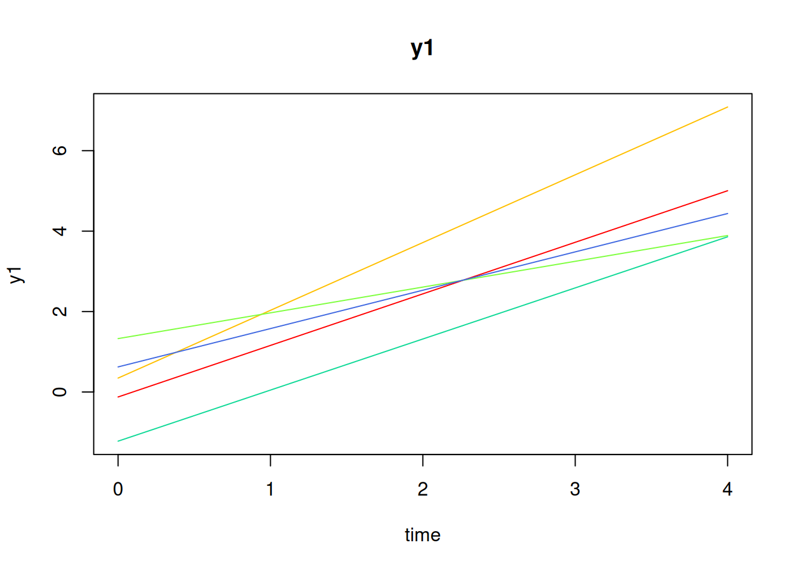
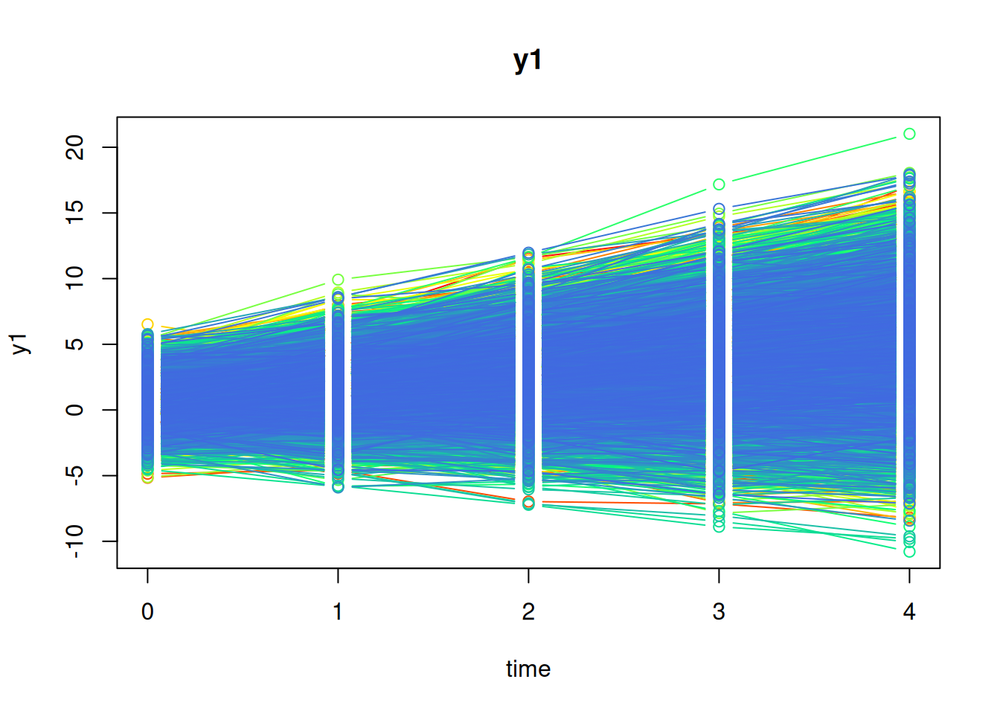
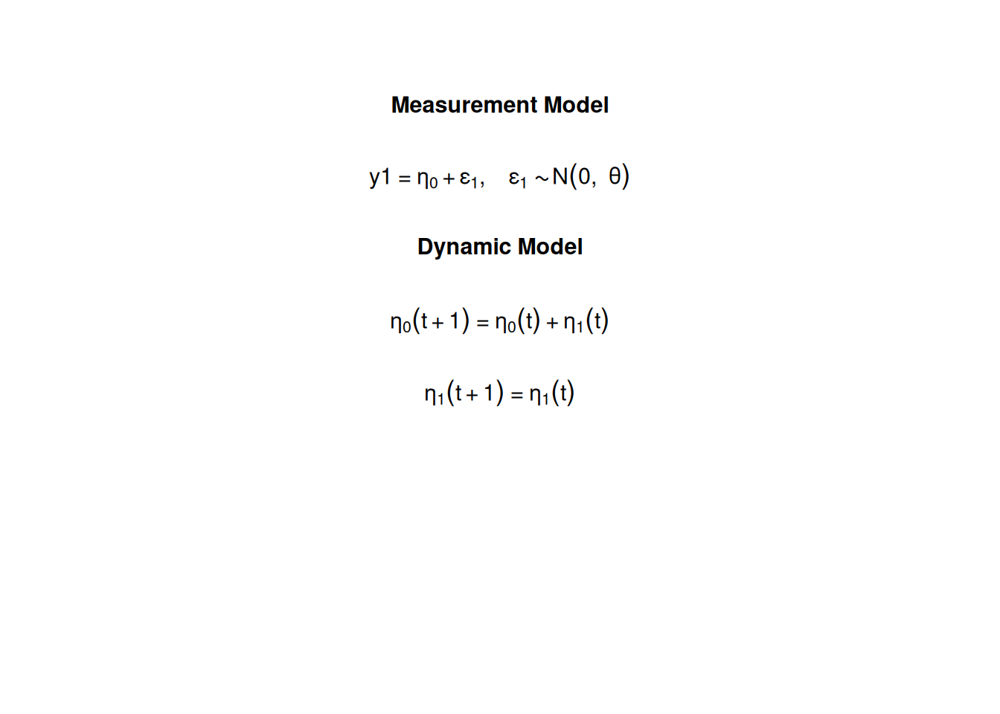

n[1] 10000time[1] 5mu0[1] 0.615 1.006sigma0 [,1] [,2]
[1,] 1.932 0.618
[2,] 0.618 0.587sigma0_l [,1] [,2]
[1,] 1.3899640 0.0000000
[2,] 0.4446158 0.6239525theta[1] 0.6theta_l[1] 0.7745967The measurement model is given by \[\begin{equation} Y_{i, t} = \left( \begin{array}{cc} 1 & 0 \\ \end{array} \right) \left( \begin{array}{c} \eta_{0_{i, t}} \\ \eta_{1_{i, t}} \\ \end{array} \right) + \boldsymbol{\varepsilon}_{i, t}, \quad \mathrm{with} \quad \boldsymbol{\varepsilon}_{i, t} \sim \mathcal{N} \left( 0, \theta \right) \end{equation}\] where \(Y_{i, t}\), \(\eta_{0_{i, t}}\), \(\eta_{1_{i, t}}\), and \(\boldsymbol{\varepsilon}_{i, t}\) are random variables and \(\theta\) is a model parameter. \(Y_{i, t}\) is the observed random variable at time \(t\) and individual \(i\), \(\eta_{0_{i, t}}\) (intercept) and \(\eta_{1_{i, t}}\) (slope) form a vector of latent random variables at time \(t\) and individual \(i\), and \(\boldsymbol{\varepsilon}_{i, t}\) a vector of random measurement errors at time \(t\) and individual \(i\). \(\theta\) is the variance of \(\boldsymbol{\varepsilon}\).
The dynamic structure is given by \[\begin{equation} \left( \begin{array}{c} \eta_{0_{i, t}} \\ \eta_{1_{i, t}} \\ \end{array} \right) = \left( \begin{array}{cc} 1 & 1 \\ 0 & 1 \\ \end{array} \right) \left( \begin{array}{c} \eta_{0_{i, t - 1}} \\ \eta_{1_{i, t - 1}} \\ \end{array} \right) . \end{equation}\]
The mean vector and covariance matrix of the intercept and slope are captured in the mean vector and covariance matrix of the initial condition given by \[\begin{equation} \boldsymbol{\mu}_{\boldsymbol{\eta} \mid 0} = \left( \begin{array}{c} \mu_{\eta_{0}} \\ \mu_{\eta_{1}} \\ \end{array} \right) \quad \mathrm{and,} \end{equation}\]
\[\begin{equation} \boldsymbol{\Sigma}_{\boldsymbol{\eta} \mid 0} = \left( \begin{array}{cc} \sigma^{2}_{\eta_{0}} & \sigma_{\eta_{0}, \eta_{1}} \\ \sigma_{\eta_{1}, \eta_{0}} & \sigma^{2}_{\eta_{1}} \\ \end{array} \right) . \end{equation}\]
Let \(t = 5\) be the number of time points and \(n = 10^{4}\) be the number of individuals.
Let the measurement error variance \(\theta\) be given by
\[\begin{equation} \theta = 0.6 . \end{equation}\]
Let the initial condition \(\boldsymbol{\eta}_{0}\) be given by
\[\begin{equation} \boldsymbol{\eta}_{0} \sim \mathcal{N} \left( \boldsymbol{\mu}_{\boldsymbol{\eta} \mid 0}, \boldsymbol{\Sigma}_{\boldsymbol{\eta} \mid 0} \right) \end{equation}\]
\[\begin{equation} \boldsymbol{\mu}_{\boldsymbol{\eta} \mid 0} = \left( \begin{array}{c} 0.615 \\ 1.006 \\ \end{array} \right) \end{equation}\]
\[\begin{equation} \boldsymbol{\Sigma}_{\boldsymbol{\eta} \mid 0} = \left( \begin{array}{ccc} 1.932 & 0.618 \\ 0.618 & 0.587 \\ \end{array} \right) . \end{equation}\]
n[1] 10000time[1] 5mu0[1] 0.615 1.006sigma0 [,1] [,2]
[1,] 1.932 0.618
[2,] 0.618 0.587sigma0_l [,1] [,2]
[1,] 1.3899640 0.0000000
[2,] 0.4446158 0.6239525theta[1] 0.6theta_l[1] 0.7745967
SimSSMLinGrowth Function from the simStateSpace Package to Simulate Datalibrary(simStateSpace)
sim <- SimSSMLinGrowth(
n = n,
time = time,
mu0 = mu0,
sigma0_l = sigma0_l,
theta_l = theta_l,
type = 0
)
data <- as.data.frame(sim)
head(data) id time y1
1 1 0 1.723564
2 1 1 2.148702
3 1 2 3.384974
4 1 3 6.225426
5 1 4 5.993965
6 2 0 1.951861plot(sim)
dynr_data <- dynr::dynr.data(
dataframe = data,
id = "id",
time = "time",
observed = "y1"
)dynr_initial <- dynr::prep.initial(
values.inistate = mu0,
params.inistate = c("mu0_0", "mu0_1"),
values.inicov = sigma0,
params.inicov = matrix(
data = c(
"sigma0_00", "sigma0_01",
"sigma0_01", "sigma0_11"
),
nrow = 2
)
)dynr_measurement <- dynr::prep.measurement(
values.load = matrix(data = c(1, 0), nrow = 1),
params.load = matrix(data = "fixed", nrow = 1, ncol = 2),
state.names = c("eta_0", "eta_1"),
obs.names = "y1"
)dynr_dynamics <- dynr::prep.formulaDynamics(
formula = list(
eta_0 ~ eta_0 + eta_1,
eta_1 ~ eta_1
),
isContinuousTime = FALSE
)Warning in dynr::prep.formulaDynamics(formula = list(eta_0 ~ eta_0 + eta_1, :
You provided no start values: length(startval)==0. If you have no free
parameters, keep calm and carry on.dynr_noise <- dynr::prep.noise(
values.latent = matrix(data = 0, nrow = 2, ncol = 2),
params.latent = matrix(data = "fixed", nrow = 2, ncol = 2),
values.observed = theta,
params.observed = "theta"
)model <- dynr::dynr.model(
data = dynr_data,
initial = dynr_initial,
measurement = dynr_measurement,
dynamics = dynr_dynamics,
noise = dynr_noise,
outfile = "lin-growth.c"
)
results <- dynr::dynr.cook(
model,
debug_flag = TRUE,
verbose = FALSE
)[1] "Get ready!!!!"
using C compiler: ‘gcc (Ubuntu 11.4.0-1ubuntu1~22.04) 11.4.0’
Optimization function called.
Starting Hessian calculation ...
Finished Hessian calculation.
Original exit flag: 3
Modified exit flag: 3
Optimization terminated successfully: ftol_rel or ftol_abs was reached.
Original fitted parameters: -0.5089635 0.60732 0.9952181 0.6477021 0.3152438
-0.9463643
Transformed fitted parameters: 0.6011183 0.60732 0.9952181 1.911144 0.6024764
0.5780766
Doing end processing
Successful trial
Total Time: 46.21715
Backend Time: 45.80256 summary(results)Coefficients:
Estimate Std. Error t value ci.lower ci.upper Pr(>|t|)
theta 0.601118 0.004914 122.34 0.591488 0.610749 <2e-16 ***
mu0_0 0.607320 0.015112 40.19 0.577701 0.636939 <2e-16 ***
mu0_1 0.995218 0.007992 124.53 0.979554 1.010882 <2e-16 ***
sigma0_00 1.911144 0.032346 59.08 1.847747 1.974541 <2e-16 ***
sigma0_01 0.602476 0.013016 46.29 0.576966 0.627987 <2e-16 ***
sigma0_11 0.578077 0.009046 63.90 0.560347 0.595807 <2e-16 ***
---
Signif. codes: 0 '***' 0.001 '**' 0.01 '*' 0.05 '.' 0.1 ' ' 1
-2 log-likelihood value at convergence = 167712.56
AIC = 167724.56
BIC = 167777.48[1] 0.6073200 0.9952181mu0_hat[1] 0.6073200 0.9952181sigma0_hat [,1] [,2]
[1,] 1.9111442 0.6024764
[2,] 0.6024764 0.5780766theta_hat theta
0.6011183 data <- as.data.frame(sim, long = FALSE)
head(data) id y1_0 y1_1 y1_2 y1_3 y1_4
1 1 1.72356430 2.1487019 3.38497364 6.22542609 5.9939649
2 2 1.95186051 2.6140623 5.60107919 5.59791920 7.6881040
3 3 0.07909854 -1.1410633 -0.02940765 0.07103948 -0.4998955
4 4 -0.14827866 -0.6478676 -0.33440620 -0.29683127 -0.6950588
5 5 1.14625267 2.3844799 0.39101270 -0.76159166 1.6750324
6 6 1.02604168 2.1852479 2.55168739 2.13223414 4.1499727model <- "
# factor loadings
eta0 =~ 1 * y1_0 + 1 * y1_1 + 1 * y1_2 + 1 * y1_3 + 1 * y1_4
eta1 =~ 0 * y1_0 + 1 * y1_1 + 2 * y1_2 + 3 * y1_3 + 4 * y1_4
# means of latent variables
eta0 ~ mu0_0 * 1
eta1 ~ mu0_1 * 1
# variances and covariances of latent variables
eta0 ~~ sigma0_00 * eta0
eta0 ~~ sigma0_01 * eta1
eta1 ~~ sigma0_11 * eta1
# constrain error variance theta to be equal
y1_0 ~~ theta * y1_0
y1_1 ~~ theta * y1_1
y1_2 ~~ theta * y1_2
y1_3 ~~ theta * y1_3
y1_4 ~~ theta * y1_4
"fit <- lavaan::growth(
model = model,
data = data
)
lavaan::summary(fit)lavaan 0.6-18 ended normally after 34 iterations
Estimator ML
Optimization method NLMINB
Number of model parameters 10
Number of equality constraints 4
Number of observations 10000
Model Test User Model:
Test statistic 5.386
Degrees of freedom 14
P-value (Chi-square) 0.980
Parameter Estimates:
Standard errors Standard
Information Expected
Information saturated (h1) model Structured
Latent Variables:
Estimate Std.Err z-value P(>|z|)
eta0 =~
y1_0 1.000
y1_1 1.000
y1_2 1.000
y1_3 1.000
y1_4 1.000
eta1 =~
y1_0 0.000
y1_1 1.000
y1_2 2.000
y1_3 3.000
y1_4 4.000
Covariances:
Estimate Std.Err z-value P(>|z|)
eta0 ~~
eta1 (s0_0) 0.602 0.013 46.317 0.000
Intercepts:
Estimate Std.Err z-value P(>|z|)
eta0 (m0_0) 0.607 0.015 40.295 0.000
eta1 (m0_1) 0.995 0.008 124.582 0.000
Variances:
Estimate Std.Err z-value P(>|z|)
eta0 (s0_0) 1.911 0.032 59.235 0.000
eta1 (s0_1) 0.578 0.009 63.955 0.000
.y1_0 (thet) 0.601 0.005 122.474 0.000
.y1_1 (thet) 0.601 0.005 122.474 0.000
.y1_2 (thet) 0.601 0.005 122.474 0.000
.y1_3 (thet) 0.601 0.005 122.474 0.000
.y1_4 (thet) 0.601 0.005 122.474 0.000[1] 0.6073200 0.9952181mu0_hat[1] 0.6073200 0.9952181sigma0_hat [,1] [,2]
[1,] 1.9111442 0.6024764
[2,] 0.6024764 0.5780766theta_hat[1] 0.6011183